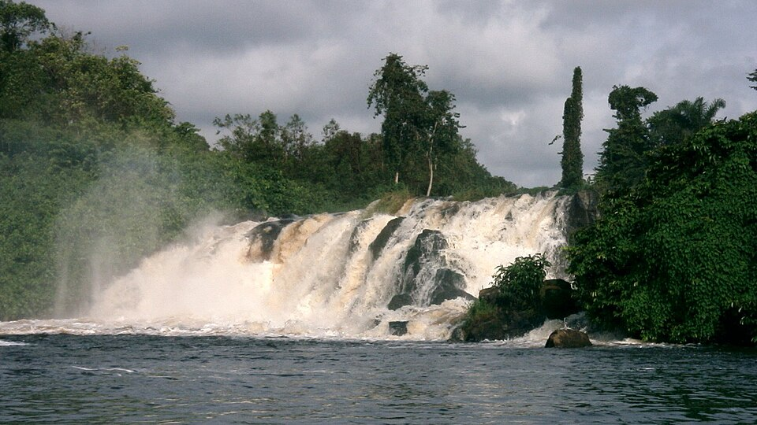
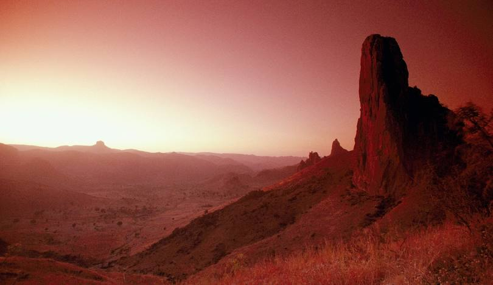
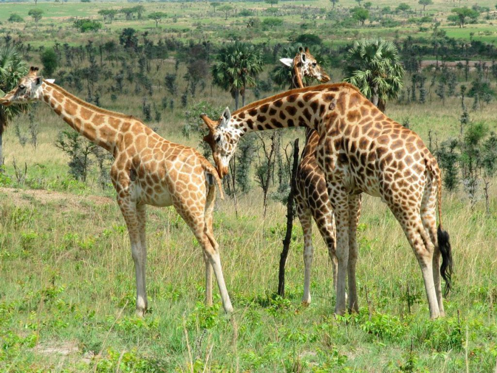

Tourisme au Cameroun
Des paysages époustouflants et des aventures inoubliables
Destinations Incortournables
Explorez les sites touristiques

Mont Cameroun
Volcan actif culminant à 4 095m, le plus haut sommet d'Afrique de
l'Ouest. Une ascension inoubliable pour les amateurs de randonnée.
Chutes de Lobé
Les chutes de la Lobé se trouvent au sud du Cameroun. Situées à sept kilomètres au sud de Kribi, elles ont la particularité rare au monde du fait que le fleuve Lobé se jette directement dans l'océan Atlantique. Elles constituent l'attraction majeure de Kribi.


Monts Mandara
Les monts Mandara sont un massif montagneux volcanique situé à la frontière entre le Cameroun et le Nigeria. Leur point culminant est le mont Oupay avec 1 494 mètres d'altitude.
Parc de Waza
Le plus grand parc national du Cameroun, abritant éléphants, girafes, lions, et plus de 300 espèces d'oiseaux.

Activités Touristiques
Une multitude d'expériences vous attend
Randonnée
Explorez les montagnes et volcans
Safari
Observez la faune sauvage
Plages
Détendez-vous au bord de l'océan
Écotourisme
Découvrez les forêts tropicales
Tours culturels
Visitez les villages traditionnels
Aventure
Vivez des expériences uniques
Informations Pratiques
Tout ce que vous devez savoir avant votre voyage
Meilleure période
Novembre à Février (saison sèche) pour la plupart des r��gions
Visa
Requis pour la plupart des nationalités, demande à l'ambassade
Santé
Vaccination fièvre jaune obligatoire, traitement antipaludéen recommandé
MMonnaie
Franc CFA (XAF) - 1 EUR ≈ 655 XAF
Planifiez Votre Aventure
Le Cameroun vous attend avec ses merveilles naturelles et
culturelles. Contactez-nous pour organiser votre voyage sur mesure.